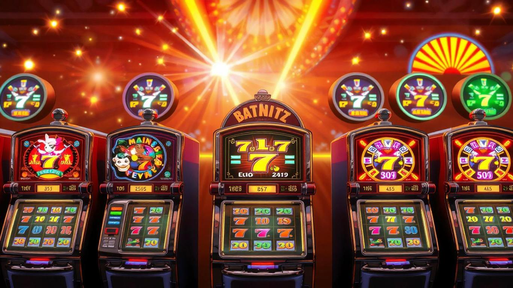

O Weiss Bet Casino destaca-se no mercado português de jogos online com uma oferta de bónus de boas-vindas generosa e emocionante. Este pacote de boas-vindas é projetado para dar aos novos jogadores um impulso significativo ao iniciar sua jornada no Weiss Casino.
 Ganhar BónusO Weiss Casino oferece um pacote de boas-vindas impressionante que se estende pelos primeiros três depósitos:
Antes de começar a jogar, é crucial compreender os requisitos de aposta. No Weiss Bet, você precisa apostar 45 vezes o valor do bónus em dinheiro e 55 vezes os ganhos das rodadas grátis antes de poder sacar.
Nem todos os jogos contribuem igualmente para os requisitos de aposta. No Weiss Casino, os slots geralmente contribuem 100%, enquanto jogos de mesa como blackjack e roleta podem contribuir menos. Foque-se nos jogos que contribuem mais para cumprir os requisitos mais rapidamente.
Divida seu bónus em sessões menores de jogo para prolongar sua experiência e aumentar suas chances de cumprir os requisitos de aposta.
Use suas rodadas grátis em slots populares e de alta volatilidade para maximizar seus ganhos potenciais.
Além do bónus de boas-vindas, o Weiss Bet oferece:
O Weiss Casino promove o jogo responsável, oferecendo ferramentas como:
O bónus de boas-vindas do Weiss Casino é uma excelente oportunidade para começar sua jornada de jogo com um impulso extra. Lembre-se de jogar de forma responsável, entender os termos e condições, e aproveitar ao máximo cada aspecto do bónus. Com estratégia e cuidado, você pode transformar esse bónus em uma experiência de jogo emocionante e potencialmente lucrativa no Weiss Bet Casino.